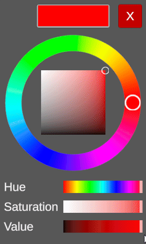
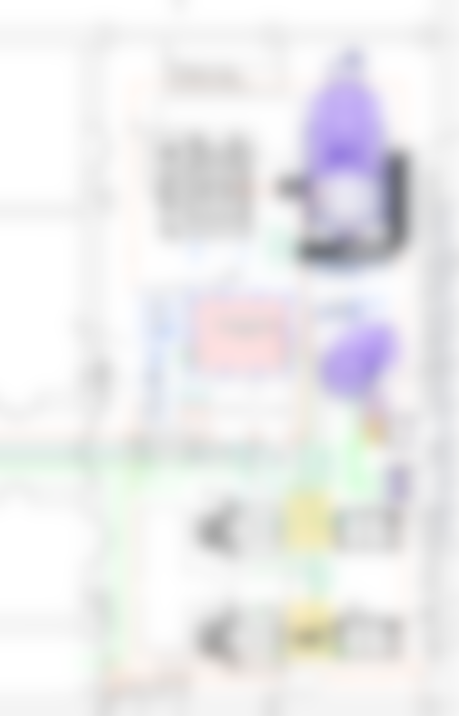
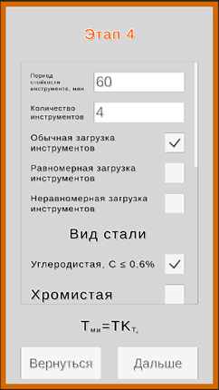
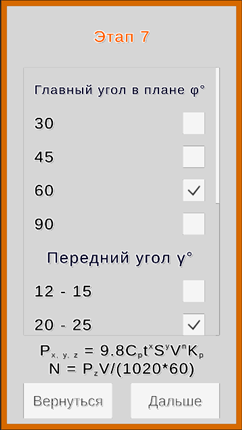
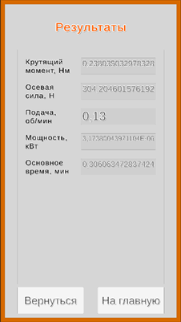
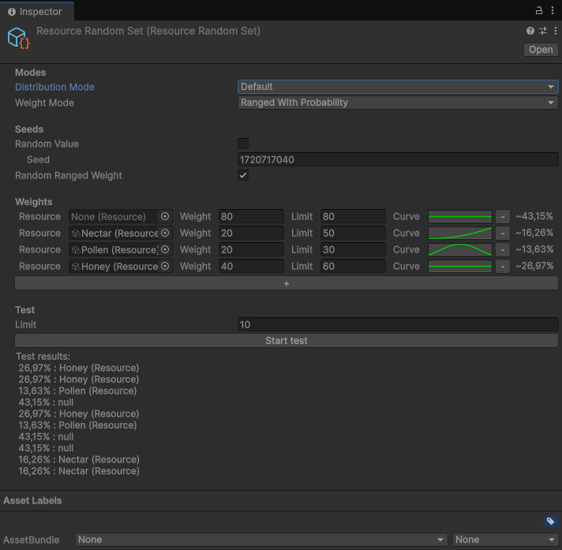

На сцене имеются контейнеры для реактивов (колбы, пробирки) и станция реакций с устройствами для воздействия на станцию (электричество, тепло, свет). В меню можно перезапустить сцену, изучить список веществ и реакций, заполнить шприц выбранным реактивом и создать вещества и реакции. При создании веществ можно настроить материал отображения вещества, а при создании реакции - обратимость и необходимые условия среды реакции.

В среде имитационного моделирования GPSS Studio моделируется работа цеха. Имеется множество ограничений - заготовки перевозятся термистами вдвоем, некоторые станции привязаны к роли сотрудника и так далее. По выходным данным GPSS-модели приложение воспроизводит анимацию и изменение состояний объектов цеха. На демонстрации представлена обработка двух заготовок разными технологическими процессами.

Инженерный калькулятор, предоставляющий расчеты для пяти видов обработки детали на станках технологов-машиностроителей. Ввод данных разделены на этапы, которые различаются в зависимости от вида обработки. На формах отображены поля ввода и примечания к заполнению, а иногда и используемые формулы.
Формулы, таблицы и алгоритмы расчетов взяты из книги Балабанова А.Н. "Краткий справочник технолога-машиностроителя" 1992 года.



Экспериментальная игра, игровой процесс которой заключен в сборе различных ресурсов (нектар, мед, пыльца) с сетки из сот. Соединять содержимое сот можно только одинакового типа ресурса и одинакового количества. Удерживая пустые ячейки можно сместить весь ряд сот.
Моя задача в проекте это создание основы игрового процесса: управляемая шестиугольная сетка, система случайной генерации, реализация core-механик и их визуальной отдачи.

">